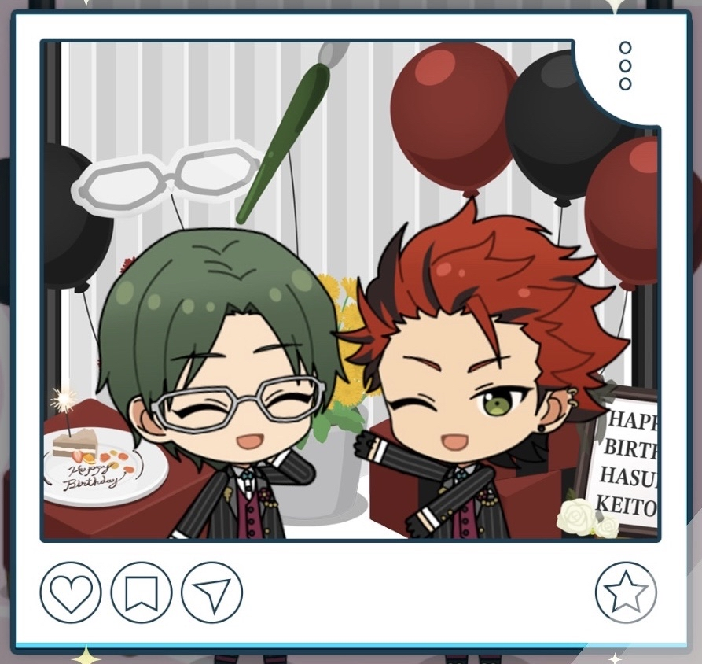

(2025) Keito Hasumi Birthday

It's always a delight having you come celebrate my birthday. Thank you. I'll keep working towards improving myself.
Before the Stream

Ahh, Anzu? What is it? You wanted to talk to me about something?
"Did you buy yourself anything for your birthday?" I could swear Sakuma asked me the same thing a second ago...
Ah, well. I bought a few books I'd had my eye on, but that's about it.
I don't tend to celebrate myself, so... Kanzaki and the others treated me to a celebratory meal for my birthday.
Besides, the fans are looking forward to the stream I'm holding. I'd say if anything, wishing for more than that would just be greedy.
Starting the Birthday Live Stream

Thanks for coming to watch the stream. To be honest, I didn't think so many comments would come in.
No, I should say they're still coming in now. Things haven't been smooth sailing, but it makes me realize yet again that the path I've chosen isn't a mistake.
Now then. It wouldn't feel bad to keep talking and sharing my thoughts, but it'd be a problem if we ran out of time for all the questions and answers you took the time to send in.
So then, let's start the question segment. I'll do my best to make it something you all will enjoy.
During the Birthday Live Stream 1
Selecting "We'll keep supporting you!"
That reminds me. Looking through the comments, there seem to be a lot of questions about temples and topics about glasses, not just my idol work."
There are some in here that are touching on things I said in lives a few years ago, huh. I'm really grateful for the fact that you're still watching over me even now
Hm? “We’ll keep rooting you on!”, huh...?
Thank you. I’ll strive to be an idol people want to keep supporting, and one that makes them feel glad they did.
During the Birthday Live Stream 2
Selecting "I've been looking forward to Keito-san's stream."

Anyways. So the next request is this one... Hm? “I’ve been looking forward to Keito-san’s livestream”...?
And then... There’s a comment that says, “I got my assignments and work done ahead of time today just for this.”
It’s wonderful getting things done earlier than you have to. And what’s more, to do so for me— I couldn’t possibly be happier.
But, you don’t need to push yourself for the sake of watching the stream. I’d feel awful if you wore yourself out and couldn’t watch it.
I intend to do more streams in the future too. So, please take it easy.
Question and Answer Session
Now then, let’s begin the question segment. By the way, it doesn’t matter what the question contains. I promise I’ll answer any question equally to the others.
What kinds of things do you all usually want to ask me? This is the right time to let me know.
I did buy a whole set of manga that’s been popular with middle and high schoolers, hm. The reasons the characters do what they do are clear, and they were easy to relate to.
I get why it’s so popular. But, there is one problem... Apparently, the sequel is going to be movie. Of course it is.1
It’s undecided whether it’ll get a manga adaptation, but if they call it the work of the original story’s author, I suppose I have no choice but to go see it.
Originally, glasses are used as tool to help people with poor eyesight. For me, I’d say I wouldn’t be able to go throughout my daily life without them.
Be that as it may. I have no intention of disavowing the use of non-prescription lenses as a fashion statement or anything.
It’s even a common item used in idol photoshoots. Well, I hardly wear them myself, though.
Hmm. I don’t know what you mean, but... I suppose there are things that you need to psych yourself up for or want encouragement for.
Just because you took action on something doesn’t mean you’ll get a good result. But, if you don’t, regret will come after.
You don’t want to have regrets like, “If I had only acted back then...” later on, right? Then, go for it! Because I’ll be supporting you too.
Office Conversations
| Polaroid | Office Line |
|---|---|
 | It’s a delight being celebrated Don’t be so stiff ‘n formal, at least for today. |
This is a photo I'll always remember. I am deeply happy to hear you say that | |
Would it have been better if I smiled more? You’re serious even on your birthday, Hasumi-san! | |
To think, you remembered my birthday... I owe you quite a lot, after all. |
Translation Notes
- ↑ Localized this line a bit to get across his apprehension; the original line is 続編は映画で、 というパターンらしい (there is a pattern in manga sequels being made into movies).